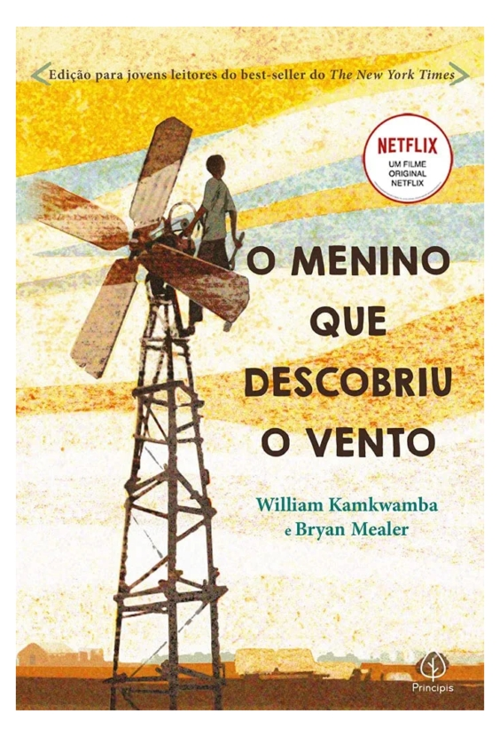

O menino que descobriu o vento - Willian Kamkwamba
Sinopse
Quando uma terrível seca atingiu o pequeno vilarejo onde William Kamkwamba vivia, noMalaui, sua família perdeu todas as safras da estação, ficando sem ter o que comer ou vender, impossibilitando também a continuidade dos estudos de William. Assim, o garoto começou a explorar os livros de ciências na biblioteca de sua aldeia e foi lá que teve uma ideia que mudaria a vida de sua família para sempre: construir um moinho de vento.Construída com ferro-velho e peças usadas de bicicleta, a incrível criação de William levou eletricidade para casa, o que ajudou a família a bombear a água de que precisavam para cultivar a terra.